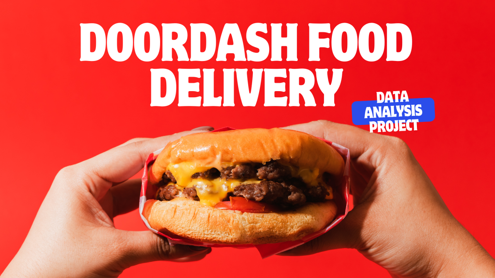
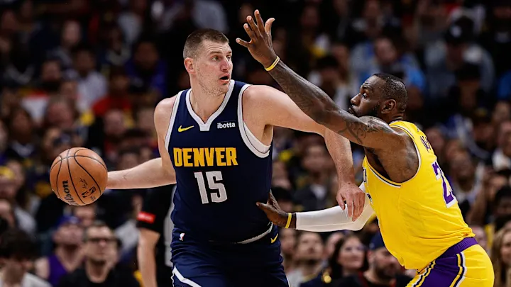

I'm excited to share that I'm transiting into a career in data analytics! With a solid foundation in regulatory compliance,
I discovered a passion for working with data to uncover insights. I'm eager to put my analytical mindset and problem solving
skills to work in data full time. Currently, I am honing my skills with DataCareerJumpstart, where I'm building projects
with Excel, Tableau and SQL. Whilst I hone my skills, I am a Fitness to Practise Case Manager in the healthcare industry.


Using Excel I analysed 2,000+ rows of customer marketing data from DoorDash. The dataset contained information on customer demographics, product preferences and marketing campaigns.
I analysed flotation plant data for Metals R Us using R, focusing on key variables affecting ore processing.The dataset had 737,000+ rows, and I used Deepnote for analysis.
Created an interactive Dashboard in Tableau highlighting key performance metrics for 1,800+ of Massachusetts school
systems.

Created data visulisations using statistics from the 2023/24 NBA season.
Explored IDA loan data offering insights into gloabal financial assitance paterns, with a focus on Fiji
I used intermediate SQL commands to explore a dataset on patient demographics and health.